SO scans continuously in azimuth at fixed elevation, so instead of discrete pointings we simulate one
sidereal day of the idealized scan, accumulate per-pixel hit and mean-time maps for every optics tube with
pixell, and materialize them into a standard ObsTable with one row per
(tube, observed pixel, day). Source queries map the source to its pixel, so the normal
simulate_lightcurves path is used unchanged.
Model assumptions
Site 22°57'31"S 67°47'15"W; boresight elevation 40°; azimuth triangle wave at 1°/s.
Each 120 s sweep is followed by a 6 s (5%) turnaround at the end of the range with no data.
Each patch is crossed once while rising, in the east range (az 30–150°), and once while
setting, in the west range (az 210–330°). SO switches daily between the two for each patch:
the rising and setting crossings around one meridian transit share a transit_day, and
successive transit days use opposite crossings. Each range is simulated for a full sidereal day and
from_time_maps picks one crossing per day.
Each pixel is therefore observed at most once per tube per day. Row time is the hit-weighted (circular)
mean of that crossing.
13 tubes, 1.25° field of view, 1.75° hex spacing with half the outer ring missing; 8 MF,
4 UHF, 1 LF.
Pointings are precessed (IAU 2006) from the mean equator and equinox of one epoch, mid-way through
the year, to ICRS; over a multi-year survey this drifts by ~0.014° per year. Refraction (~0.01°
at 40° elevation), nutation and aberration (<0.006°) are ignored.
Downtime: 65% uptime by default, of which 75% of the lost time is in long outages
(3–14 days, three times more likely to start in June–September) and the rest in 1–6 h
interruptions starting between 08:00 and 20:00 local time. Visits overlapping downtime are dropped. The
7-day ObsTable diagnostics above the yearly plots use no downtime. No sun/moon avoidance.
The az 30–150° / 210–330° throws limit coverage to roughly Dec −59° to
+21° (plus tube offsets), narrower than the full 40°-elevation ring (−73° to +27°).
Per tube visit: median duration (min) / exposure (s) / passes
4.2 / 4.0 / 3.0
Fraction of observed (tube, pixel) seen on both crossings
0.945
LF: daily sky fraction mean (10-90%), no downtime / downtime
0.548 (0.458-0.638) / 0.367 (0.000-0.634)
LF: days per year observed (10/50/90% of area), no downtime / downtime
366 / 366 / 366 / 229 / 237 / 243
LF: revisit gap with downtime, median / 90% / 99% / max (days)
1.0 / 2.0 / 12.0 / 31.9
MF: daily sky fraction mean (10-90%), no downtime / downtime
0.543 (0.458-0.627) / 0.364 (0.000-0.624)
MF: days per year observed (10/50/90% of area), no downtime / downtime
366 / 366 / 366 / 230 / 237 / 243
MF: revisit gap with downtime, median / 90% / 99% / max (days)
1.0 / 2.0 / 12.0 / 27.9
all: daily sky fraction mean (10-90%), no downtime / downtime
0.554 (0.469-0.640) / 0.373 (0.000-0.638)
all: days per year observed (10/50/90% of area), no downtime / downtime
366 / 366 / 366 / 230 / 238 / 244
all: revisit gap with downtime, median / 90% / 99% / max (days)
1.0 / 2.0 / 12.0 / 31.9
LF: median revisit (h) / visits per day / span (min) / exposure (s)
18.67 / 1.00 / 4.22 / 4.00
MF: median revisit (h) / visits per day / span (min) / exposure (s)
18.94 / 1.00 / 4.25 / 8.00
Pixelization |error| in duration (s): median / 90%
49.00 / 237.00
Pixelization |error| in exposure (s): median / 90%
1.00 / 2.00
Pixelization |error| in passes: median / 90%
1.00 / 1.00
Pixelization |error| in mean time (s): median / 90%
126.00 / 252.00
Cadence and visit length (per band)
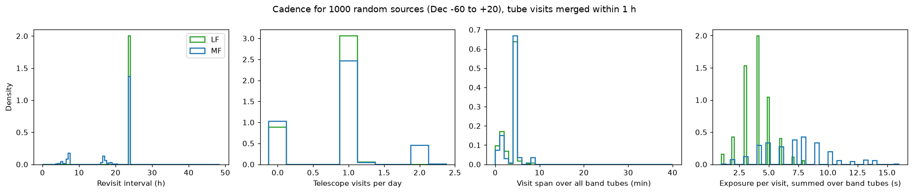
Each source's successive transits alternate between its rising and setting crossing, so revisit intervals alternate between one sidereal day plus and minus the source's rising-to-setting offset (which depends on declination), giving two peaks symmetric about 24 h. Edge pixels seen on only one crossing are revisited every two days. A visit is a train of short passes (one per 2-minute azimuth sweep) over its span.
Validation against an exact single-point trace
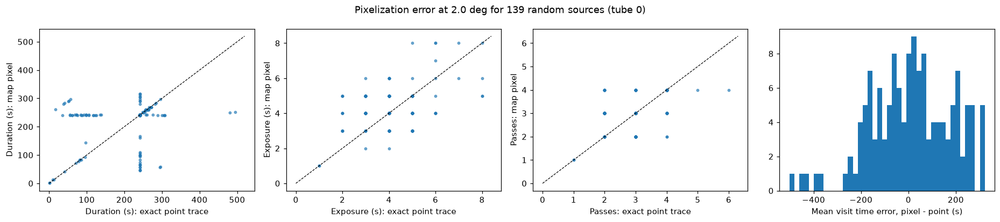
Map statistics are exact at pixel centers; the scatter here is pixelization error for arbitrary source positions. Duration is quantized by the sweep period, so off-by-one-pass errors move it by ~2 minutes.
Input time map, hits: rising
Detector-array samples in FoV per visit, rising crossing (east azimuth range); input time map.
Input time map, hits: setting
Detector-array samples in FoV per visit, setting crossing (west azimuth range); input time map.
Input time map, mean observation time: rising
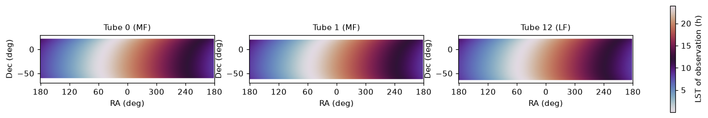
LST of observation (h), rising crossing (east azimuth range); input time map.
Input time map, mean observation time: setting
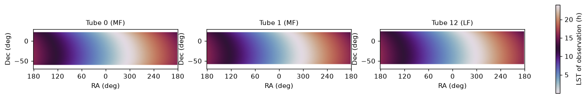
LST of observation (h), setting crossing (west azimuth range); input time map.
Input time map, visit start time: rising
LST of first in-FoV sample (h), rising crossing (east azimuth range); input time map.
Input time map, visit start time: setting
LST of first in-FoV sample (h), setting crossing (west azimuth range); input time map.
Input time map, visit duration: rising
Visit duration, first to last in-FoV sample (min), rising crossing (east azimuth range); input time map.
Input time map, visit duration: setting
Visit duration, first to last in-FoV sample (min), setting crossing (west azimuth range); input time map.
Input time map, exposure: rising
Time in tube FoV per visit (s), rising crossing (east azimuth range); input time map.
Input time map, exposure: setting
Time in tube FoV per visit (s), setting crossing (west azimuth range); input time map.
Input time map, passes: rising
Azimuth sweeps over pixel per visit, rising crossing (east azimuth range); input time map.
Input time map, passes: setting
Azimuth sweeps over pixel per visit, setting crossing (west azimuth range); input time map.
Single time map: tube 0 (MF), rising
All six map fields for this one tube and crossing; pixels never observed are blank.
Single time map: tube 0 (MF), setting
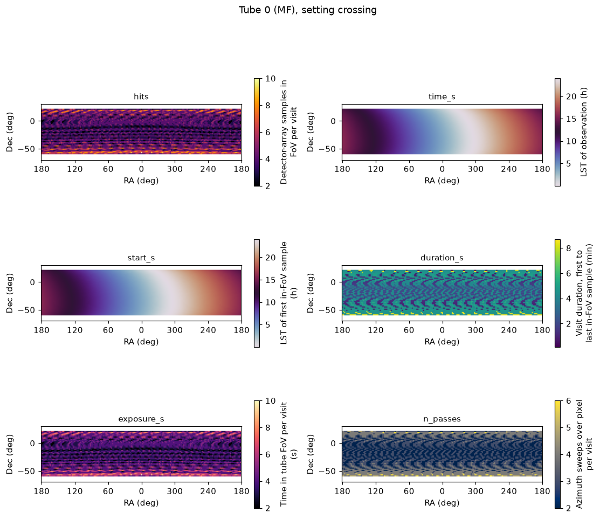
All six map fields for this one tube and crossing; pixels never observed are blank.
Single time map: tube 1 (MF), rising
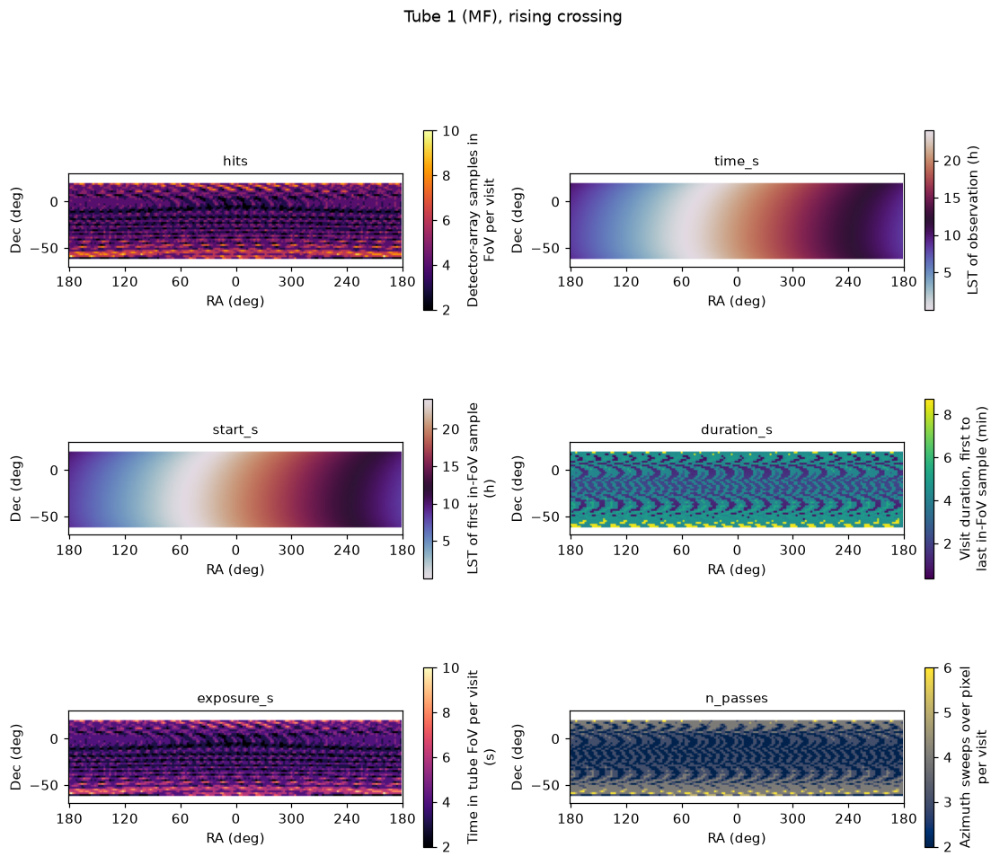
All six map fields for this one tube and crossing; pixels never observed are blank.
Single time map: tube 1 (MF), setting
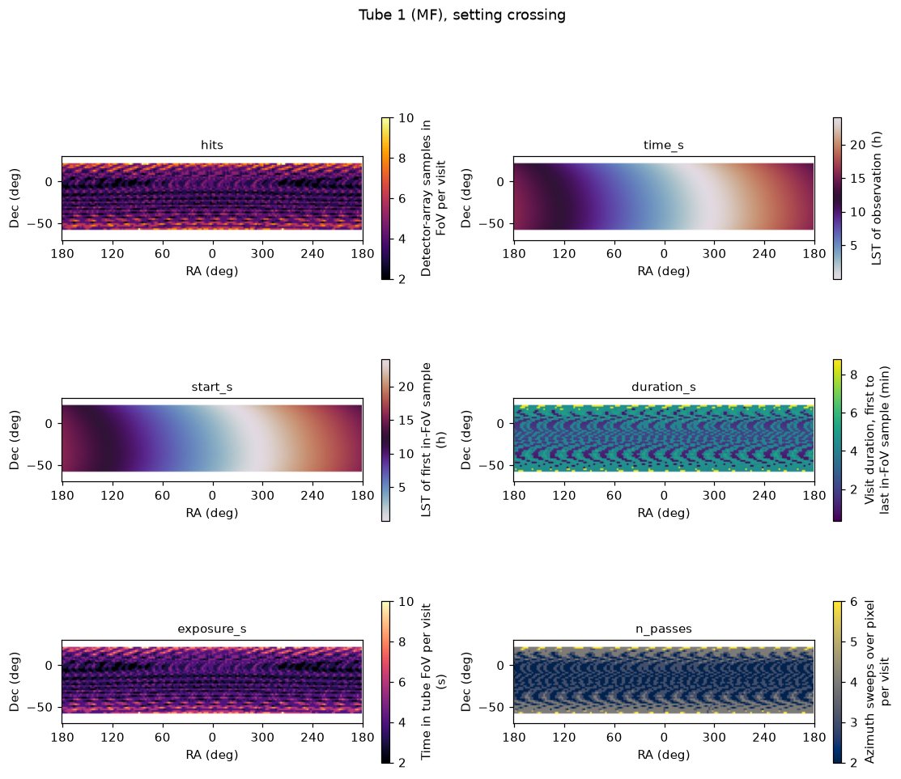
All six map fields for this one tube and crossing; pixels never observed are blank.
Single time map: tube 12 (LF), rising
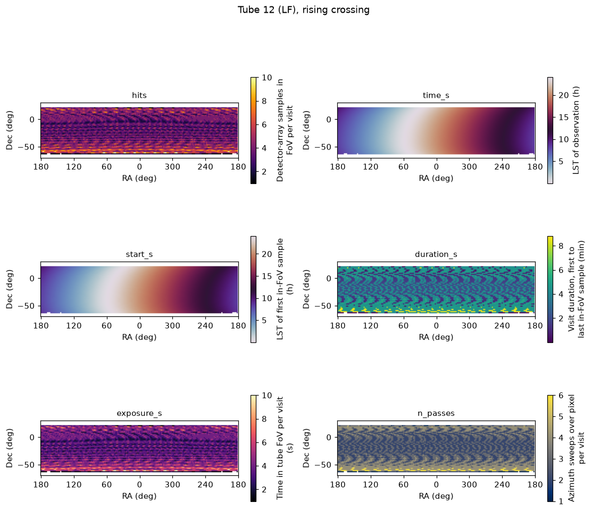
All six map fields for this one tube and crossing; pixels never observed are blank.
Single time map: tube 12 (LF), setting
All six map fields for this one tube and crossing; pixels never observed are blank.
Downtime realization
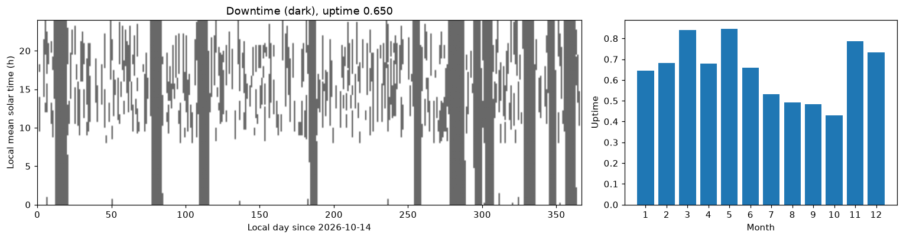
One random year of downtime for 65% uptime: outages of 3–14 days, preferentially June–September, plus few-hour interruptions starting in local daytime.
One year of coverage with downtime
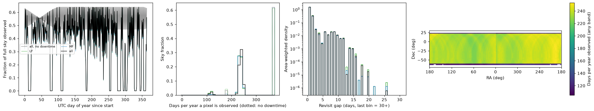
From left: fraction of the full sky observed on each UTC day (grey: no downtime); area-weighted days per year each footprint pixel is observed (dotted: no downtime); area-weighted revisit gaps between observed transit days (one sidereal day when nothing is lost; longer gaps come from downtime and edge pixels seen on one crossing only); days observed per year, any band. Sun/moon avoidance is not modeled.
Coverage union
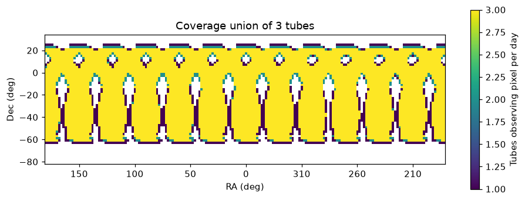
Number of tubes that observe each pixel on a rising day and on a setting day.
Tube layout
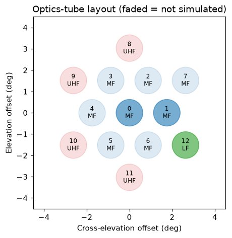
Hex focal plane; circles are 1.25° fields of view.